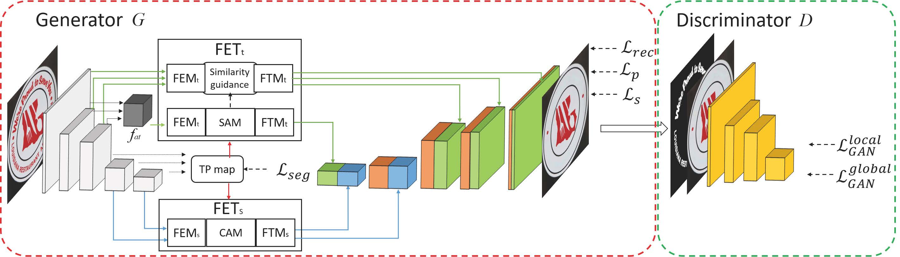
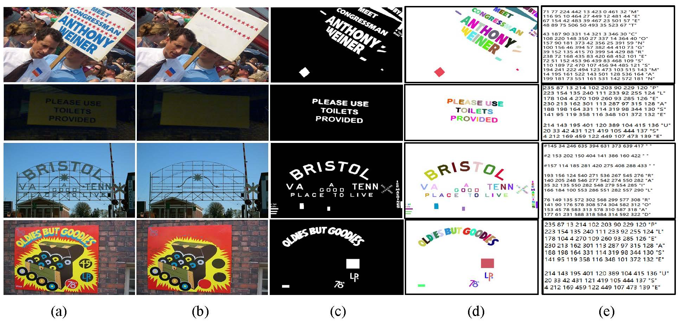
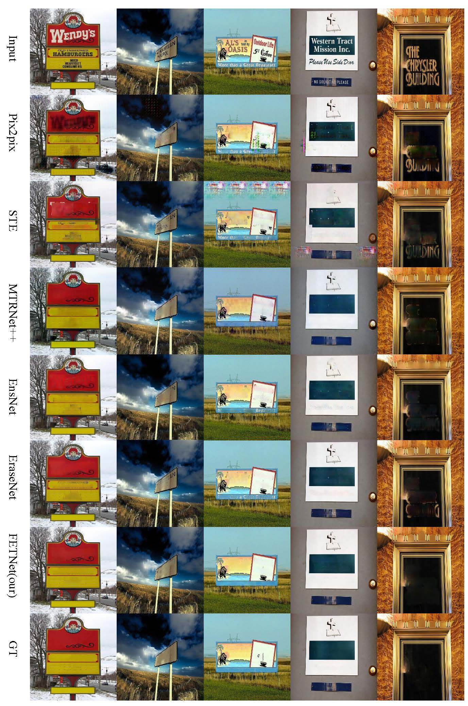
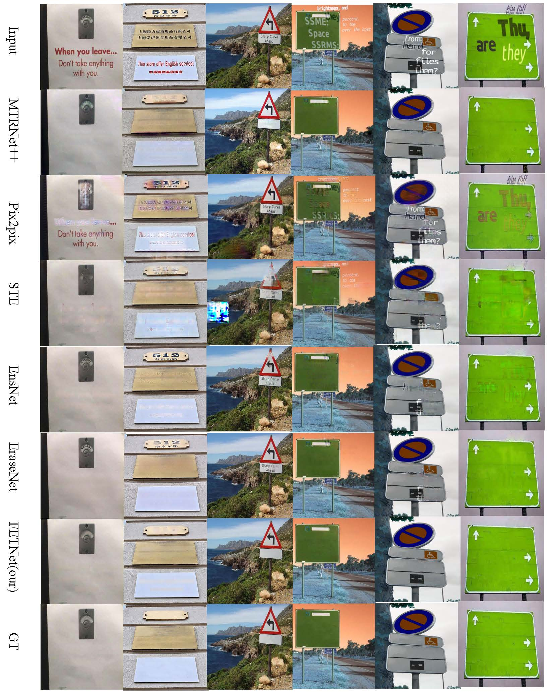

FETNet: Feature Erasing and Transferring Network for Scene Text Removal
1School of Computer Science and Artificial Intelligence, Wuhan University of Technology, Wuhan, China
2Human Interface Laboratory, Kyushu University, Fukuoka, Japan
PR 2023
Abstract
The scene text removal (STR) task aims to remove text regions and recover the background smoothly in images for private information protection. Most existing STR methods adopt encoder-decoder-based CNNs, with direct copies of the features in the skip connections. However, the encoded features contain both text texture and structure information. The insufficient utilization of text features hampers the performance of background reconstruction in text removal regions. To tackle these problems, we propose a novel Feature Erasing and Transferring (FET) mechanism to reconfigure the encoded features for STR in this paper. In FET, a Feature Erasing Module (FEM) is designed to erase text features. An attention module is responsible for generating the feature similarity guidance. The Feature Transferring Module (FTM) is introduced to transfer the corresponding features in different layers based on the attention guidance. With this mechanism, a one-stage, end-to-end trainable network called FETNet is constructed for scene text removal. In addition, to facilitate research on both scene text removal and segmentation tasks, we introduce a novel dataset, Flickr-ST, with multi-category annotations. A sufficient number of experiments and ablation studies are conducted on the public datasets and Flickr-ST. Our proposed method achieves state-of-the-art performance using most metrics, with remarkably higher quality scene text removal results. The source code of our work is available at: https://github.com/GuangtaoLyu/FETNet.
Method

As shown in figure, the pipeline of our model consists of two parts: a generator $G$ and a discriminator $D$. In $G$, one simple encoder-decoder-skip-connection structure is constructed, consisting of five residual convolutional layers in the encoder and five residual convolutional (3$\times$3) layers in the decoder, respectively. Following the resnet backbone architecture design, the first to fifth layers of the encoder has kernel sizes of 7, 5, 3, 3, and 3 respectively. And the output feature maps of them have the size of $1, \frac{1}{2}, \frac{1}{4}, \frac{1}{8}, \frac{1}{16}$ of the input image, respectively. In $D$, a four-layer CNN is designed to judge images as real or fake globally and locally.
Flickr_ST Dataset

The Flickr-ST dataset is a real-world dataset \cite{ Scene Text Eraser} including 3,004 images with 2,204 images for training and 800 images for testing. The scene text in Flickr-ST has arbitrary orientations and shapes. Some examples are shown in Fig.(a). It provides five types of annotations, text removed images (in Fig.(b)), pixel-level text masks (in Fig.(c)), character instance segmentation labels, category labels, and character-level bounding box labels(in Fig.(d) and (e)). The word-level scene text regions can be calculated implicitly from those labels. To the best of our knowledge, Flickr-ST is the only dataset with such comprehensive annotations for scene text related tasks.
Visual Comparisons


Acknowledgements
This work is supported by the Open Project Program of the National Laboratory of Pattern Recognition (NLPR) (No.202200049).
BibTex
@article{lyu2023fetnet,
title={FETNet: Feature erasing and transferring network for scene text removal},
author={Lyu, Guangtao and Liu, Kun and Zhu, Anna and Uchida, Seiichi and Iwana, Brian Kenji},
journal={Pattern Recognition},
volume={140},
pages={109531},
year={2023},
publisher={Elsevier}
}